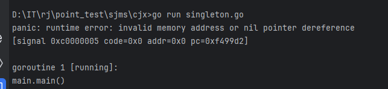

Go 的 24 种设计模式
Design Pattern 是软件工程中针对常见的开发问题 使用的通用方案, 与所使用的语言无关 ;
使用设计模式的好处
- 面试
- 提高代码复用性
- 前人总结下来的经验, 合适的位置使用合适的设计模式
创建型模式 (Creational Patterns） 6 种
在 Go 语言中，创建型模式（Creational Patterns）是一类用于处理对象创建的设计模式。它们的主要目标是提供一种灵活的方式来创建对象，同时隐藏对象创建的具体细节，从而降低代码的耦合度，并提高代码的可复用性和可维护性。
比如http.NewRequest()，bytes.NewReader()，md5.New()
创建型模式的核心思想是将对象的创建与使用分离，使得系统不依赖于具体的对象创建方式，而是依赖于抽象。
单例模式 Singleton
确保一个类只有一个实例，并提供一个全局访问点。
适用场景：
- 配置管理、日志记录、数据库连接池等需要全局唯一实例的场景。
之前在项目里面，我们之前一直在用的global.DB，global.Config其实和这个差不多，但是它不是单例模式，因为是直接使用的对应的对象，而不是通过函数返回的对象
好处
- 避免复制大型结构体，性能和内存更好。
- 允许修改对象内容；值传递的修改只作用于副本。
sync.Mutex、sync.Once等同步对象不能被复制，单例通常必须通过指针共享。- 可以用
nil表示“没有创建成功/不存在”；结构体值没有这个语义。
Go复制代码
package main
import (
"fmt"
)
type DB struct {
Database string
}
var db *DB
func GetDB() *DB {
db = &DB{
Database: "fengfeng",
}
return db
}
func main() {
d := db
fmt.Printf("%p, %v\n", d, d.Database)
}
之前是直接使用全局变量，但是这个变量是存在为nil的情况的，这种情况下再使用它就是为出现空指针的情况

那么可以使用一个函数，在里面判断一下，如果这个对象是nil，就去初始化对象，后续如果有的话，就直接返回之前的那个创建好的对象
sync库提供并发同步原语：
Mutex互斥锁、
WaitGroup等待组、
Once单次执行、
Pool对象池、
Map并发安全map、
RWMutex读写锁等，
用于协调goroutine间的同步和共享资源访问。
一下使用来实现解决并发问题;
无论一万个 goroutine 同时调用 GetInstance()，初始化函数也只会运行一次，所有人最终拿到同一个 instance。
如果内部出现了并发,就是都调用 get方法 , 然后内部传参的内容不一致,内部实现了sync.Once() 方法 : 遵循谁先抢到就创建谁的;
Go复制代码
package main
import (
"fmt"
"sync"
)
type DB struct {
Database string
}
var db *DB
var once sync.Once
func GetDB() *DB {
once.Do(func() {
db = &DB{
Database: "fengfeng",
}
})
return db
}
func main() {
d := GetDB()
fmt.Printf("%p, %v\n", d, d.Database)
d = GetDB()
fmt.Printf("%p, %v\n", d, d.Database)
}
简单工厂模式 Simple Factory Pattern
它们的目标都是将对象的创建与使用分离，从而降低代码的耦合度
但是具体的工厂还是有区别
模式 | 特点 | 适用场景 |
简单工厂 | 一个工厂类负责创建所有产品，通过条件判断决定创建哪种产品。 | 产品种类较少，创建逻辑简单。 |
工厂方法模式 | 每个产品对应一个工厂类，符合开闭原则。 | 产品种类较多，创建逻辑复杂。 |
抽象工厂模式 | 每个工厂类可以创建一组相关产品，强调产品族的概念。 | 需要创建一组相关对象的场景。 |
简单工厂并不是一个正式的设计模式，而是一种编程习惯。它通过一个工厂类来封装对象的创建逻辑，客户端只需要传递参数给工厂类，由工厂类决定创建哪种对象。
特点：
- 只有一个工厂类，负责创建所有产品。
- 通过条件判断（如
switch或if-else）来决定创建哪种产品。
适用场景：
- 产品种类较少，且创建逻辑简单的场景。
开闭原则：当需求发生变化时，可以通过增加新的代码来扩展系统的功能，而不是修改现有的代码。
package main
import "fmt"
type Product interface { // 接口实现的是将方法实现封装
Use()
}
type ProductA struct{} //创建对象
func (p *ProductA) Use() { //使用对象创建接口方法
fmt.Println("Using Product A")
}
type ProductB struct{}
func (p *ProductB) Use() { fmt.Println("Using Product B") }
//是的，这是Go的方法接收者模式。定义了(WeiXinPay)作为接收者后，可以创建该类型实例直接调用方法：
pay := WeiXinPay{}
result := pay.PayPage(100)
func CreateProduct(productType string) Product {
//在创建的方法中使用switch方法实现选择不同的对象实现方法
//就是因为这里使用了多个选择所以违反开闭原则
switch productType {
case "A":
return &ProductA{}
case "B":
return &ProductB{}
default:
return nil
}
}
func main() {
productA := CreateProduct("A")
productA.Use()
productB := CreateProduct("B")
productB.Use()
}
Go复制代码
优点：
- 简单易用，适合小型项目。
缺点：
- 不符合开闭原则（OCP），新增产品时需要修改工厂类。
工厂方法模式 Factory Method
之前的简单工厂模式，一个工厂就负责了好几个产品的生产
工厂方法模式则是定义了一个创建对象的接口，但将具体的创建逻辑延迟到子类中。每个子类负责创建一种具体的产品。
特点：
- 每个产品对应一个工厂类。
- 符合开闭原则，新增产品时只需增加新的工厂类，无需修改现有代码。
适用场景：
- 产品种类较多，且创建逻辑复杂的场景。
Go复制代码
package main
import "fmt"
type Database interface {
Connect() string
}
// MySQL 操作
type MySQL struct{}
func (m *MySQL) Connect() string {
return "Connected to MySQL"
}
// PostgreSQL 操作
type PostgreSQL struct{}
func (p *PostgreSQL) Connect() string {
return "Connected to PostgreSQL"
}
// DatabaseFactory 工厂接口
type DatabaseFactory interface {
//使用接口封装了创建方法 + 方法返回 对比普通只封装了一般方法
CreateDatabase() Database
}
// MySQLFactory MySQL 工厂
type MySQLFactory struct{}
func (m *MySQLFactory) CreateDatabase() Database {
return &MySQL{}
}
// PostgreSQL 工厂
type PostgreSQLFactory struct{}
func (p *PostgreSQLFactory) CreateDatabase() Database {
return &PostgreSQL{}
}
// UseDatabase 使用数据库
func UseDatabase(factory DatabaseFactory) {
db := factory.CreateDatabase()
fmt.Println(db.Connect())
}
func main() {
// 使用 MySQL
mysqlFactory := &MySQLFactory{}
UseDatabase(mysqlFactory)
// 使用 PostgreSQL
postgresFactory := &PostgreSQLFactory{}
UseDatabase(postgresFactory)
}
优点：
- 符合开闭原则，扩展性强。
- 每个工厂只负责一种产品的创建，职责单一。
缺点：
- 类的数量会增加，系统复杂度提高。
抽象工厂模式 Abstract Factory
抽象工厂模式提供一个创建一系列相关或相互依赖对象的接口，而无需指定它们的具体类。它适用于需要创建一组相关产品的场景。
特点：
- 每个工厂类可以创建多个相关产品。
- 强调产品族的概念，例如 GUI 库中的不同风格组件（Windows 风格、Mac 风格）。
适用场景：
- 需要创建一组相关对象的场景。
对，抽象工厂把多个相关工厂方法封装到一个工厂接口中。每个具体工厂实现该接口，负责创建一整套相关产品。比工厂方法更高一层抽象，适合创建产品族。
Go复制代码
package main
import "fmt"
type Database interface {
Connect() string
}
// MySQL 操作
type MySQL struct{}
func (m *MySQL) Connect() string {
return "Connected to MySQL"
}
// PostgreSQL 操作
type PostgreSQL struct{}
func (p *PostgreSQL) Connect() string {
return "Connected to PostgreSQL"
}
// DatabaseFactory 工厂接口
type DatabaseFactory interface {
CreateDatabase() Database
}
// MySQLFactory MySQL 工厂
type MySQLFactory struct{}
func (m *MySQLFactory) CreateDatabase() Database {
return &MySQL{}
}
// PostgreSQL 工厂
type PostgreSQLFactory struct{}
func (p *PostgreSQLFactory) CreateDatabase() Database {
return &PostgreSQL{}
}
// UseDatabase 使用数据库
func UseDatabase(factory DatabaseFactory) {
db := factory.CreateDatabase()
fmt.Println(db.Connect())
}
func main() {
// 使用 MySQL
mysqlFactory := &MySQLFactory{}
UseDatabase(mysqlFactory)
// 使用 PostgreSQL
postgresFactory := &PostgreSQLFactory{}
UseDatabase(postgresFactory)
}
优点：
- 可以创建一组相关对象，保证对象之间的兼容性。
- 符合开闭原则，扩展性强。
缺点：
- 类的数量会增加，系统复杂度提高。
- 新增产品族或产品等级结构时，需要修改抽象工厂接口及其所有实现类。
抽象工厂模式和工厂方法模式的区别
特性 | 工厂方法模式 | 抽象工厂模式 |
产品数量 | 一个工厂方法只创建一个产品。 | 一个抽象工厂创建多个相关产品（产品族）。 |
产品关系 | 产品之间没有直接关系。 | 产品之间是相关的（属于同一个产品族）。 |
扩展性 | 扩展时需要新增具体工厂类。 | 扩展时需要新增具体工厂类和产品族。 |
实现方式 | 通过继承实现。 | 通过组合实现。 |
适用场景 | 单一产品的创建。 | 多个相关产品的创建。 |
- 工厂方法模式 更简单，适用于单一产品的创建。
- 抽象工厂模式 更强大，适用于创建多个相关产品，但实现也更复杂。
建造者模式 Builder
它用于分步构建复杂对象。
建造者模式的核心思想是将一个复杂对象的构建过程与其表示分离，
使得同样的构建过程可以创建不同的表示。
建造者模式特别适用于以下场景 :
- 对象的构建过程非常复杂，包含多个步骤。
- 对象的构建过程需要支持不同的配置或表示。
package main
import "fmt"
// 产品：House
type House struct {
Walls string
Roof string
Windows string
Doors string }
func (h *House) Show() {
fmt.Printf("House with %s walls, %s roof, %s windows, and %s doors\n",
h.Walls, h.Roof, h.Windows, h.Doors)
}
// 建造者接口
type HouseBuilder interface {
BuildWalls()
BuildRoof()
BuildWindows()
BuildDoors()
GetHouse() *House
}
// 具体建造者：ConcreteHouseBuilder //包工头
type ConcreteHouseBuilder struct {
house *House
}
func NewConcreteHouseBuilder() *ConcreteHouseBuilder {
return &ConcreteHouseBuilder{house: &House{}}
}
func (b *ConcreteHouseBuilder) BuildWalls() {
b.house.Walls = "concrete"
}
func (b *ConcreteHouseBuilder) BuildRoof() {
b.house.Roof = "tile"
}
func (b *ConcreteHouseBuilder) BuildWindows() {
b.house.Windows = "glass"
}
func (b *ConcreteHouseBuilder) BuildDoors() {
b.house.Doors = "wooden"
}
func (b *ConcreteHouseBuilder) GetHouse() *House {
return b.house
}
// 指挥者 //经理
type Director struct {
builder HouseBuilder
}
func NewDirector(builder HouseBuilder) *Director {
return &Director{builder: builder}
}
func (d *Director) Construct() {
d.builder.BuildWalls()
d.builder.BuildRoof()
d.builder.BuildWindows()
d.builder.BuildDoors()
}
// 客户端代码
func main() {
// 创建具体建造者
builder := NewConcreteHouseBuilder()
// 创建指挥者
director := NewDirector(builder)
// 指挥者构建产品
director.Construct()
// 获取最终产品
house := builder.GetHouse()
house.Show()
}
原型模式 Prototype
它通过复制现有对象来创建新对象，而不是通过新建类的方式。原型模式的核心思想是利用对象的克隆能力，避免重复初始化，特别适用于创建成本较高的对象。
package main
import "fmt"
// Prototype 原型接口
type Prototype interface {
Clone() Prototype
}
// ConcretePrototype 具体原型
type ConcretePrototype struct {
Name string
Age int
}
func (p *ConcretePrototype) Clone() Prototype {
// 创建一个新对象，并复制当前对象的属性
return &ConcretePrototype{
Name: p.Name,
Age: p.Age,
}
}
func (p *ConcretePrototype) String() string {
return fmt.Sprintf("Name: %s, Age: %d", p.Name, p.Age)
}
func main() {
// 创建原型对象
prototype := &ConcretePrototype{
Name: "Alice",
Age: 25,
}
// 克隆原型对象
clone := prototype.Clone().(*ConcretePrototype)
// 修改克隆对象的属性
clone.Name = "Bob"
clone.Age = 30
// 输出原型对象和克隆对象
fmt.Println("Prototype:", prototype)
fmt.Println("Clone:", clone)
}
使用原型模式，如果有引用类型，则需要考虑深拷贝和浅拷贝的问题
浅拷贝只复制对象本身而不复制其引用的对象，深拷贝则会递归地复制整个对象图。
这需要根据需求选择适当的拷贝方式
结构型模式（Structural Pattern） 7种
它主要关注如何将类或对象组合成更大的结构，以便在不改变原有类或对象的情况下，实现新的功能或优化系统结构。
结构型模式的核心思想是通过组合（Composition）而不是继承（Inheritance）来实现代码的复用和扩展。它们帮助开发者设计出灵活、可扩展的系统结构，同时降低类与类之间的耦合度。
代理模式 Proxy
它通过提供一个代理对象来控制对另一个对象的访问。代理模式的核心思想是在不改变原始对象的情况下，通过代理对象来增强或限制对原始对象的访问。
代理模式通常用于以下场景 ：
- 延迟初始化：当对象的创建成本较高时，可以通过代理延迟对象的初始化。
- 访问控制：通过代理对象限制对原始对象的访问权限。
- 日志记录：通过代理对象记录对原始对象的访问日志。
- 缓存：通过代理对象缓存原始对象的结果，避免重复计算。
Go复制代码
package main
import (
"fmt"
"time"
)
// 主题接口
type Subject interface {
Request()
}
// 真实对象
type RealSubject struct{}
func (r *RealSubject) Request() {
fmt.Println("RealSubject: Handling Request")
}
// 代理对象
type Proxy struct {
realSubject *RealSubject
}
func NewProxy() *Proxy {
return &Proxy{}
}
func (p *Proxy) Request() {
// 延迟初始化真实对象
if p.realSubject == nil {
fmt.Println("Proxy: Lazy Initializing RealSubject")
p.realSubject = &RealSubject{}
}
// 访问控制
fmt.Println("Proxy: Checking Access")
time.Sleep(1 * time.Second) // 模拟访问控制逻辑
// 调用真实对象的方法
p.realSubject.Request()
// 日志记录
fmt.Println("Proxy: Logging Request")
}
// 客户端代码
func main() {
proxy := NewProxy()
// 通过代理对象访问真实对象
proxy.Request()
}
桥接模式 Bridge
它的核心思想是将抽象部分与实现部分分离，使它们可以独立变化。
通过这种方式，桥接模式能够避免类的数量爆炸（即类的组合呈指数增长），同时提高代码的可扩展性和可维护性。
例如：
假设你有两台电脑： 一台 Mac 和一台 Windows。
还有两台打印机： 爱普生和惠普。 这两台电脑和打印机可能会任意组合使用。
刚开始功能会这样写，windows组合爱普生和惠普，mac组合爱普生和惠普，打印就调用自己的print方法
Go复制代码
// Mac + Epson
type MacEpson struct{}
func (m *MacEpson) Print() {
fmt.Println("Print request for mac")
fmt.Println("Printing by a EPSON Printer")
}
// Mac + HP
type MacHp struct{}
func (m *MacHp) Print() {
fmt.Println("Print request for mac")
fmt.Println("Printing by a HP Printer")
}
// Windows + Epson
type WindowsEpson struct{}
func (w *WindowsEpson) Print() {
fmt.Println("Print request for windows")
fmt.Println("Printing by a EPSON Printer")
}
// Windows + HP
type WindowsHp struct{}
func (w *WindowsHp) Print() {
fmt.Println("Print request for windows")
fmt.Println("Printing by a HP Printer")
}
但是，如果引入新的打印机， 代码量会成倍增长。
所以， 我们需要把计算机和打印机解耦，计算机的print的方法，就桥接到选择的打印机的print方法上
代码如下：
Go复制代码
package main
import "fmt"
// 1. 定义 Printer 接口（实现层）
type Printer interface {
PrintFile()
}
// 2. 定义 Epson 打印机（具体实现）
type Epson struct{}
func (p *Epson) PrintFile() {
fmt.Println("Printing by a EPSON Printer")
}
// 3. 定义 HP 打印机（具体实现）
type Hp struct{}
func (p *Hp) PrintFile() {
fmt.Println("Printing by a HP Printer")
}
// 4. 定义 Computer 接口（抽象层）
type Computer interface {
Print()
SetPrinter(Printer)
}
// 5. 定义 Mac 计算机（精确抽象）
type Mac struct {
printer Printer
}
func (m *Mac) Print() {
fmt.Println("Print request for mac")
m.printer.PrintFile()
}
func (m *Mac) SetPrinter(p Printer) {
m.printer = p
}
// 6. 定义 Windows 计算机（精确抽象）
type Windows struct {
printer Printer
}
func (w *Windows) Print() {
fmt.Println("Print request for windows")
w.printer.PrintFile()
}
func (w *Windows) SetPrinter(p Printer) {
w.printer = p
}
// 7. 客户端代码
func main() {
// 创建打印机实例
hpPrinter := &Hp{}
epsonPrinter := &Epson{}
// 创建计算机实例
macComputer := &Mac{}
winComputer := &Windows{}
// Mac 使用 HP 打印机
macComputer.SetPrinter(hpPrinter)
macComputer.Print()
fmt.Println()
// Mac 使用 Epson 打印机
macComputer.SetPrinter(epsonPrinter)
macComputer.Print()
fmt.Println()
// Windows 使用 HP 打印机
winComputer.SetPrinter(hpPrinter)
winComputer.Print()
fmt.Println()
// Windows 使用 Epson 打印机
winComputer.SetPrinter(epsonPrinter)
winComputer.Print()
fmt.Println()
}
桥接模式的优点
- 解耦：
- 抽象部分和实现部分可以独立变化，互不影响。
- 修改实现部分不会影响抽象部分的代码。
- 灵活性：
- 可以动态地切换实现部分（例如，运行时更换实现）。
- 可扩展性：
- 新增抽象部分或实现部分时，不需要修改现有代码。
- 避免类爆炸：
- 通过组合代替继承，避免了类的数量呈指数增长。
组合模式 Composite
它允许你将对象组合成树形结构来表示“部分-整体”的层次关系。组合模式让客户端可以统一地处理单个对象和对象组合。
应用场景：
- 文件系统：如目录和文件的管理，可以通过组合模式将文件夹视为组合节点，文件视为叶子节点。
- 组织结构：如公司内部的部门和员工关系，可以通过组合模式将部门视为组合节点，
员工视为叶子节点。
Go复制代码
package main
import (
"fmt"
)
// FileSystemNode 组件接口：文件系统节点
type FileSystemNode interface {
Display(indent string)
}
// File 叶子节点：文件
type File struct {
name string
}
func (f *File) Display(indent string) {
fmt.Println(indent + f.name)
}
// Folder 组合节点：文件夹
type Folder struct {
name string
children []FileSystemNode
}
func (f *Folder) Display(indent string) {
fmt.Println(indent + f.name)
for _, child := range f.children {
child.Display(indent + " ")
}
}
func (f *Folder) Add(child FileSystemNode) {
f.children = append(f.children, child)
}
// 客户端代码
func main() {
// 创建文件
file1 := &File{name: "file1.txt"}
file2 := &File{name: "file2.txt"}
file3 := &File{name: "file3.txt"}
// 创建文件夹
folder1 := &Folder{name: "Folder1"}
folder2 := &Folder{name: "Folder2"}
// 将文件添加到文件夹
folder1.Add(file1)
folder1.Add(file2)
folder2.Add(file3)
// 将文件夹添加到另一个文件夹
rootFolder := &Folder{name: "Root"}
rootFolder.Add(folder1)
rootFolder.Add(folder2)
// 显示文件系统结构
rootFolder.Display("")
}
为什么使用组合模式？
- 简化客户端代码：客户端可以一致地对待单个对象和对象组合，而不需要关心它们的具体类型。
- 增强灵活性：可以在不修改现有代码的情况下轻松添加新的组件或修改现有组件的结构。
- 提高可扩展性：支持递归组合，使得复杂的层次结构易于构建和维护。
装饰器模式 Decorator
它允许你动态地为对象添加行为或职责，而不需要修改对象的原始类。通过引入装饰者类，可以在运行时灵活地组合不同的功能，而不需要创建大量的子类。装饰者模式的核心思想是将对象包装在一个或多个装饰者中，每个装饰者都可以在调用被装饰对象的方法之前或之后添加额外的行为。
假设你正在开发一个 Web 服务，其中有一个核心功能是处理用户请求。现在，你需要在不修改核心功能代码的情况下，为请求处理添加以下功能：
- 日志记录：记录每个请求的详细信息。
- 性能监控：记录每个请求的处理时间。
使用装饰器模式，你可以轻松地实现这些功能，而无需修改原始请求处理逻辑。
Go复制代码
package main
import (
"fmt"
"time"
)
// RequestHandler 组件接口：请求处理器
type RequestHandler interface {
HandleRequest(url string) string
}
// CoreRequestHandler 具体组件：核心请求处理器
type CoreRequestHandler struct{}
func (c *CoreRequestHandler) HandleRequest(url string) string {
// 模拟请求处理
time.Sleep(100 * time.Millisecond)
return fmt.Sprintf("Response from %s", url)
}
// LoggingDecorator 装饰器：日志记录
type LoggingDecorator struct {
handler RequestHandler
}
func (l *LoggingDecorator) HandleRequest(url string) string {
// 记录请求日志
fmt.Printf("Logging: Handling request for %s\n", url)
// 调用原始处理器
response := l.handler.HandleRequest(url)
// 记录响应日志
fmt.Printf("Logging: Response for %s: %s\n", url, response)
return response
}
// PerformanceMonitorDecorator 装饰器：性能监控
type PerformanceMonitorDecorator struct {
handler RequestHandler
}
func (p *PerformanceMonitorDecorator) HandleRequest(url string) string {
// 记录开始时间
start := time.Now()
// 调用原始处理器
response := p.handler.HandleRequest(url)
// 记录处理时间
duration := time.Since(start)
fmt.Printf("Performance: Request for %s took %v\n", url, duration)
return response
}
// 客户端代码
func main() {
// 创建核心请求处理器
coreHandler := &CoreRequestHandler{}
// 添加日志记录功能
loggingHandler := &LoggingDecorator{coreHandler}
// 添加性能监控功能
monitoredHandler := &PerformanceMonitorDecorator{loggingHandler}
// 处理请求
response := monitoredHandler.HandleRequest("/api/data")
fmt.Println(response)
}
装饰器模式的优势
- 动态扩展功能：
- 你可以在运行时为请求处理器添加日志记录和性能监控功能，而无需修改核心请求处理器的代码。
- 单一职责原则：
- 每个装饰器只负责一个特定的功能（如日志记录或性能监控），符合单一职责原则。
- 灵活性：
- 可以轻松地添加或移除装饰器，而不会影响其他部分的代码。
适配器模式 Adapter
它允许不兼容的接口之间进行协作。适配器模式的核心思想是将一个类的接口转换成客户端期望的另一个接口，从而使原本不兼容的类能够一起工作。
假设你的系统需要集成一个第三方支付系统，但其接口与你的系统不兼容。你可以使用适配器模式将第三方支付系统的接口转换为你的系统期望的接口。
Go复制代码
package main
import "fmt"
// PaymentSystem 目标接口：支付系统
type PaymentSystem interface {
Pay(amount float64) bool
}
// LocalPaymentSystem 具体目标：本地支付系统
type LocalPaymentSystem struct{}
func (l *LocalPaymentSystem) Pay(amount float64) bool {
fmt.Printf("Paid %.2f using local payment system\n", amount)
return true
}
// ThirdPartyPaymentSystem 适配者：第三方支付系统
type ThirdPartyPaymentSystem struct{}
func (t *ThirdPartyPaymentSystem) MakePayment(amount float64) string {
return fmt.Sprintf("Paid %.2f using third-party payment system", amount)
}
// PaymentAdapter 适配器：将第三方支付系统适配到本地支付系统接口
type PaymentAdapter struct {
thirdPartySystem *ThirdPartyPaymentSystem
}
func (p *PaymentAdapter) Pay(amount float64) bool {
result := p.thirdPartySystem.MakePayment(amount)
fmt.Println(result)
return true
}
// 客户端代码
func main() {
// 使用本地支付系统
localPayment := &LocalPaymentSystem{}
localPayment.Pay(100.0)
// 使用适配器将第三方支付系统适配到本地支付系统接口
thirdPartyPayment := &ThirdPartyPaymentSystem{}
adapter := &PaymentAdapter{thirdPartyPayment}
adapter.Pay(200.0)
}
适配器模式通过一个中间层（适配器）将不兼容的接口转换为兼容的接口，从而使原本不兼容的类能够一起工作。它非常适合用于集成第三方库、复用旧代码或统一接口的场景
外观模式 Facade
它提供了一个统一的接口，用于访问子系统中的一组接口。外观模式的核心思想是简化复杂系统的使用，通过提供一个高层接口，隐藏系统的复杂性，使客户端更容易使用。
假设你正在开发一个电商系统，订单处理涉及多个步骤（如库存检查、支付处理、物流调度等）。你可以使用外观模式将这些步骤封装在一个统一的接口中，简化客户端代码。
Go复制代码
package main
import "fmt"
// Inventory 子系统：库存
type Inventory struct{}
func (i *Inventory) Check() {
fmt.Println("Inventory: Checking stock...")
}
// Payment 子系统：支付
type Payment struct{}
func (p *Payment) Process() {
fmt.Println("Payment: Processing payment...")
}
// Logistics 子系统：物流
type Logistics struct{}
func (l *Logistics) Schedule() {
fmt.Println("Logistics: Scheduling delivery...")
}
// OrderFacade 外观：订单处理
type OrderFacade struct {
inventory *Inventory
payment *Payment
logistics *Logistics
}
func NewOrderFacade() *OrderFacade {
return &OrderFacade{
inventory: &Inventory{},
payment: &Payment{},
logistics: &Logistics{},
}
}
func (o *OrderFacade) PlaceOrder() {
fmt.Println("Placing order...")
o.inventory.Check()
o.payment.Process()
o.logistics.Schedule()
fmt.Println("Order placed successfully!")
}
// 客户端代码
func main() {
orderFacade := NewOrderFacade()
orderFacade.PlaceOrder()
}
外观模式的关键点
- 简化接口：
- 外观模式通过提供一个简单的接口，隐藏了子系统的复杂性。
- 解耦：
- 客户端代码与子系统解耦，子系统的变化不会影响客户端代码。
- 易于使用：
- 客户端无需了解子系统的内部细节，只需调用外观对象的方法。
享元模式 Flyweight
它通过共享对象来减少内存使用和提高性能。享元模式的核心思想是将对象的共享部分（内部状态）与不可共享部分（外部状态）分离，从而减少重复对象的创建。
举个例子：共享单车和百度网盘中的文件
享元模式的核心思想
- 共享对象：
- 享元模式通过共享相同的内在状态（内部状态）来减少内存使用。
- 分离状态：
- 将对象的状态分为内部状态（可共享）和外部状态（不可共享）。
- 工厂管理：
- 使用工厂模式来管理和复用享元对象。
例如：
在数据库操作中，创建和销毁连接是非常耗时的操作。为了提高性能，通常会使用连接池来管理数据库连接。连接池的核心思想是：
- 复用连接：从连接池中获取连接，使用完后将连接释放回连接池，而不是销毁。
- 减少开销：避免频繁创建和销毁连接，从而提高性能。
Go复制代码
package main
import (
"fmt"
"sync"
)
// Connection 享元接口：数据库连接
type Connection interface {
Execute(query string)
}
// ConcreteConnection 具体享元：数据库连接对象
type ConcreteConnection struct {
id int
}
func (c *ConcreteConnection) Execute(query string) {
fmt.Printf("Connection %d executing query: %s\n", c.id, query)
}
// ConnectionPool 享元工厂：连接池
type ConnectionPool struct {
connections map[int]Connection
mutex sync.Mutex
nextID int
}
func NewConnectionPool() *ConnectionPool {
return &ConnectionPool{
connections: make(map[int]Connection),
nextID: 1,
}
}
// GetConnection 获取连接对象
func (p *ConnectionPool) GetConnection() Connection {
p.mutex.Lock()
defer p.mutex.Unlock()
if len(p.connections) > 0 {
for id, conn := range p.connections {
delete(p.connections, id)
return conn
}
}
// 创建新的连接对象
conn := &ConcreteConnection{id: p.nextID}
p.nextID++
return conn
}
// ReleaseConnection 将连接对象释放回连接池，以便其他客户端可以复用这个连接对象
func (p *ConnectionPool) ReleaseConnection(conn Connection) {
p.mutex.Lock()
defer p.mutex.Unlock()
if c, ok := conn.(*ConcreteConnection); ok {
p.connections[c.id] = c
}
}
// 客户端代码
func main() {
pool := NewConnectionPool()
conn1 := pool.GetConnection()
conn1.Execute("SELECT * FROM users")
pool.ReleaseConnection(conn1)
conn2 := pool.GetConnection()
conn2.Execute("SELECT * FROM orders")
pool.ReleaseConnection(conn2)
}
享元模式的关键点
- 共享对象：
- 享元模式通过共享相同的内在状态来减少内存使用。
- 分离状态：
- 将对象的状态分为内部状态（可共享）和外部状态（不可共享）。
- 工厂管理：
- 使用工厂模式来管理和复用享元对象。
参考文档
Go讲解：组合模式 https://blog.csdn.net/zhaoxilengfeng/article/details/144434943
装饰器模式 https://blog.csdn.net/zhaoxilengfeng/article/details/144435005
享元模式 https://blog.csdn.net/zhaoxilengfeng/article/details/144458629
行为型模式（Behavioral pattern）行为型模式（Behavioral pattern）它主要关注对象之间的职责分配和通信方式。行为型模式的核心思想是通过定义对象之间的交互方式，来更好地实现系统的功能，同时降低对象之间的耦合度。
责任链模式 (Chain of Responsibility) 11种
是一种行为设计模式，它允许多个对象有机会处理请求，从而避免请求的发送者与接收者之间的耦合。责任链模式将这些对象连成一条链，并沿着这条链传递请求，直到有对象处理它为止。
核心思想：
- 解耦请求发送者和接收者：请求的发送者不需要知道具体由哪个对象处理请求，只需要将请求发送到链上即可。
- 动态组合处理逻辑：可以动态地组合处理者，灵活地调整处理顺序或增加新的处理者。
- 每个处理者只关心自己的职责：每个处理者只处理自己能处理的请求，不能处理的请求会传递给下一个处理者。
适用场景：
- 当一个请求需要经过多个对象处理，但具体由哪个对象处理不确定时。
- 当需要动态指定处理请求的对象时。
- 当希望避免请求发送者与接收者之间的紧密耦合时。
实际应用场景：
- 中间件
- 审批流程
实现一下gin的中间件功能，中间件自己可以处理请求，可以拦截，可以放行
Go复制代码
package main
import (
"fmt"
"net/http"
)
// Context 模拟 Gin 的上下文
type Context struct {
Request *http.Request
Writer http.ResponseWriter
handlers []HandlerFunc // 责任链中的处理函数
index int // 当前执行的处理函数索引
}
// HandlerFunc 定义处理函数类型
type HandlerFunc func(c *Context)
// Next 调用责任链中的下一个处理函数
func (c *Context) Next() {
c.index++
if c.index < len(c.handlers) {
c.handlers[c.index](c)
}
}
// Abort 终止责任链的执行
func (c *Context) Abort() {
c.index = len(c.handlers) // 直接跳到末尾，不再执行后续处理函数
}
// Engine 模拟 Gin 的引擎
type Engine struct {
handlers []HandlerFunc // 全局中间件和责任链
}
// Use 添加中间件到责任链
func (e *Engine) Use(middleware HandlerFunc) {
e.handlers = append(e.handlers, middleware)
}
// ServeHTTP 实现 http.Handler 接口
func (e *Engine) ServeHTTP(w http.ResponseWriter, r *http.Request) {
c := &Context{
Request: r,
Writer: w,
handlers: e.handlers,
index: -1,
}
c.Next() // 开始执行责任链
}
// LoggingMiddleware 示例中间件 1：日志记录
func LoggingMiddleware(c *Context) {
fmt.Printf("Request: %s %s\n", c.Request.Method, c.Request.URL.Path)
c.Next() // 传递给下一个中间件
}
// AuthMiddleware 示例中间件 2：认证检查
func AuthMiddleware(c *Context) {
token := c.Request.Header.Get("Authorization")
if token != "valid-token" {
c.Writer.WriteHeader(http.StatusUnauthorized)
c.Writer.Write([]byte("Unauthorized"))
c.Abort() // 终止责任链
return
}
c.Next() // 传递给下一个中间件
}
// HelloHandler 示例中间件 3：请求处理
func HelloHandler(c *Context) {
c.Writer.WriteHeader(http.StatusOK)
c.Writer.Write([]byte("Hello, World!"))
}
func main() {
// 创建引擎
engine := &Engine{}
// 添加中间件到责任链
engine.Use(LoggingMiddleware)
engine.Use(AuthMiddleware)
engine.Use(HelloHandler)
// 启动 HTTP 服务器
fmt.Println("Server is running on :8080")
http.ListenAndServe(":8080", engine)
}
责任链模式是一种强大的行为型设计模式，特别适用于需要将请求的发送者和接收者解耦、支持多个处理者或动态地添加和移除处理者的场景。
通过引入责任链模式，可以将请求传递给多个处理者，直到有一个处理者能够处理该请求为止。这样不仅提高了代码的灵活性和可维护性，还增强了系统的扩展性。
命令模式 Command
它将请求封装为一个对象，从而使你可以用不同的请求对客户进行参数化，并且支持请求的排队、记录日志、撤销操作等功能。
核心思想：
- 将请求封装为对象：将每个请求（如方法调用）封装为一个独立的对象。
- 解耦请求的发送者和接收者：发送者不需要知道接收者的具体实现，只需要通过命令对象来执行请求。
- 支持扩展：可以轻松地添加新的命令，而不需要修改现有代码。
例子：假设我们有一个任务队列系统，用于处理用户提交的任务。每个任务都是一个命令对象，任务队列会依次执行这些命令。任务可以是简单的操作（如打印消息），也可以是复杂的操作（如发送邮件、处理数据等）
Go复制代码
package main
import (
"fmt"
"time"
)
// Command 定义命令接口
type Command interface {
Execute()
}
// PrintCommand 是具体命令，表示打印消息
type PrintCommand struct {
message string
}
func (c *PrintCommand) Execute() {
fmt.Println("Executing PrintCommand:", c.message)
}
// EmailCommand 是具体命令，表示发送邮件
type EmailCommand struct {
to string
subject string
body string
}
func (c *EmailCommand) Execute() {
fmt.Printf("Executing EmailCommand: Sending email to %s\n", c.to)
fmt.Printf("Subject: %s\n", c.subject)
fmt.Printf("Body: %s\n", c.body)
}
// TaskQueue 是任务队列，用于存储和执行命令
type TaskQueue struct {
commands []Command
}
func (tq *TaskQueue) AddCommand(cmd Command) {
tq.commands = append(tq.commands, cmd)
}
func (tq *TaskQueue) ProcessCommands() {
for _, cmd := range tq.commands {
cmd.Execute()
time.Sleep(1 * time.Second) // 模拟任务执行的时间
}
tq.commands = nil // 清空任务队列
}
func main() {
// 创建任务队列
taskQueue := &TaskQueue{}
// 添加任务到队列
taskQueue.AddCommand(&PrintCommand{message: "Hello, World!"})
taskQueue.AddCommand(&EmailCommand{
to: "user@example.com",
subject: "Welcome",
body: "Thank you for signing up!",
})
taskQueue.AddCommand(&PrintCommand{message: "Task queue is running..."})
// 处理任务队列
fmt.Println("Processing task queue:")
taskQueue.ProcessCommands()
// 添加更多任务
taskQueue.AddCommand(&PrintCommand{message: "Another task"})
taskQueue.AddCommand(&EmailCommand{
to: "admin@example.com",
subject: "Report",
body: "Here is the daily report.",
})
// 再次处理任务队列
fmt.Println("\nProcessing task queue again:")
taskQueue.ProcessCommands()
}
解释器模式 Interpreter
它定义了一种语言的语法表示，并提供了一个解释器来解释这种语法。解释器模式通常用于处理类似编程语言、查询语言、规则引擎等场景。
核心思想：
- 定义语法规则：将语言的语法规则表示为一个抽象语法树（AST）。
- 解释执行：通过解释器遍历抽象语法树，执行相应的操作。
抽象语法树
抽象语法树（Abstract Syntax Tree，AST） 是编译器和解释器中的一个核心概念。它是一种树形数据结构，用于表示源代码的语法结构。AST 之所以被称为“抽象语法树”，是因为它 抽象掉了源代码中的一些具体细节，只保留了程序的逻辑结构。
为什么叫“抽象语法树”？
- 抽象（Abstract）：
- AST 并不包含源代码中的所有细节，比如括号、分号、空格等。它只关注程序的逻辑结构。
- 例如，表达式
2 * (3 + 4)的 AST 会抽象掉括号，只保留运算符和操作数的层次关系。
- 语法（Syntax）：
- AST 表示的是源代码的语法结构，而不是语义（即程序的含义）。
- 例如，AST 可以表示一个
if语句的语法结构，但不会解释if语句的具体行为。
- 树（Tree）：
- AST 是一种树形数据结构，每个节点表示一个语法结构（如表达式、语句、函数等）。
- 树的层次结构反映了源代码的嵌套关系。
比如
Rust复制代码
if x > 0 {
print("Positive")
} else {
print("Non-positive")
}
对应的AST就是
Markdown复制代码
IfStatement
├── Condition: BinaryExpression
│ ├── Left: Identifier (x)
│ ├── Operator: >
│ └── Right: Number (0)
├── ThenBlock: BlockStatement
│ └── Expression: CallExpression
│ ├── Function: Identifier (print)
│ └── Arguments: StringLiteral ("Positive")
└── ElseBlock: BlockStatement
└── Expression: CallExpression
├── Function: Identifier (print)
└── Arguments: StringLiteral ("Non-positive")
解释器模式应用还是挺多的
- 数据库查询引擎：
- 如 MySQL、PostgreSQL 等数据库的查询解析和执行。
- 规则引擎：
- 如业务规则引擎，用于解析和执行规则。
- 模板引擎：
- 如 Go 的
text/template，用于解析和执行模板。
- 数学表达式计算：
- 如计算器应用程序，用于解析和计算数学表达式。
以go语言里面的模板字符串为例：
Go复制代码
package main
import (
"os"
"text/template"
)
func main() {
// 定义模板字符串
const tmpl = `Hello, {{.Name}}! You are {{.Age}} years old.`
// 解析模板
t, err := template.New("example").Parse(tmpl)
if err != nil {
panic(err)
}
// 定义数据
data := struct {
Name string
Age int
}{
Name: "Alice",
Age: 25,
}
// 执行模板并输出结果
err = t.Execute(os.Stdout, data)
if err != nil {
panic(err)
}
}
这个是解释器模式的应用，我们需要了解内部的原理，我们自己手搓一个这样的模板字符串解析器出来
Go复制代码
package main
import (
"fmt"
"strings"
)
// Context 定义上下文，存储模板数据
type Context struct {
Data map[string]interface{}
}
// Expression 定义抽象表达式接口
type Expression interface {
Interpret(ctx *Context) string
}
// TextExpression 是文本表达式，表示普通文本
type TextExpression struct {
text string
}
func (t *TextExpression) Interpret(ctx *Context) string {
return t.text
}
// VariableExpression 是变量表达式，表示变量替换
type VariableExpression struct {
key string
}
func (v *VariableExpression) Interpret(ctx *Context) string {
value, ok := ctx.Data[v.key]
if !ok {
return ""
}
return fmt.Sprintf("%v", value)
}
// Template 是模板，包含多个表达式
type Template struct {
expressions []Expression
}
func (t *Template) Interpret(ctx *Context) string {
var result strings.Builder
for _, expr := range t.expressions {
result.WriteString(expr.Interpret(ctx))
}
return result.String()
}
// ParseTemplate 解析模板字符串并构建抽象语法树
func ParseTemplate(tmpl string) *Template {
template := &Template{}
start := 0
for {
// 查找变量表达式的起始位置
startVar := strings.Index(tmpl[start:], "{{")
if startVar == -1 {
// 如果没有变量表达式，剩下的都是普通文本
template.expressions = append(template.expressions, &TextExpression{text: tmpl[start:]})
break
}
// 添加普通文本
template.expressions = append(template.expressions, &TextExpression{text: tmpl[start : start+startVar]})
// 查找变量表达式的结束位置
endVar := strings.Index(tmpl[start+startVar:], "}}")
if endVar == -1 {
// 如果没有结束符，直接退出
break
}
// 解析变量表达式
key := strings.TrimSpace(tmpl[start+startVar+2 : start+startVar+endVar])
template.expressions = append(template.expressions, &VariableExpression{key: key})
// 更新起始位置
start = start + startVar + endVar + 2
}
return template
}
func main() {
// 定义模板字符串
tmpl := "Hello, {{Name}}! You are {{Age}} years old."
// 解析模板并构建抽象语法树
template := ParseTemplate(tmpl)
// 定义上下文数据
ctx := &Context{
Data: map[string]interface{}{
"Name": "Alice",
"Age": 25,
},
}
// 解释执行模板并输出结果
result := template.Interpret(ctx)
fmt.Println(result) // 输出: Hello, Alice! You are 25 years old.
}
迭代器模式 Iterator
它提供了一种方法顺序访问一个聚合对象中的各个元素，而又不需要暴露该对象的内部表示。迭代器模式的核心思想是将遍历逻辑从聚合对象中分离出来，使得聚合对象和遍历逻辑可以独立变化。
实际应用场景
- 集合类库：
- 如 Go 的
slice、map等集合类型，可以通过迭代器模式提供统一的遍历接口。
- 数据库查询结果：
- 数据库查询结果可以封装为一个聚合对象，并提供迭代器遍历查询结果。
- 文件系统遍历：
- 文件系统中的目录和文件可以封装为一个聚合对象，并提供迭代器遍历文件系统。
- 树形结构遍历：
- 树形结构（如二叉树、多叉树）可以提供多种遍历方式（如深度优先、广度优先）。
假设我们有一个集合类 BookCollection，它包含多本书。我们需要实现一个迭代器，用于遍历这个集合。
Go复制代码
package main
import "fmt"
// Book 定义书籍结构体
type Book struct {
Title string
Author string
}
// Iterator 定义迭代器接口
type Iterator interface {
HasNext() bool
Next() *Book
}
// BookIterator 是具体迭代器
type BookIterator struct {
books []*Book
position int
}
func (b *BookIterator) HasNext() bool {
return b.position < len(b.books)
}
func (b *BookIterator) Next() *Book {
if b.HasNext() {
book := b.books[b.position]
b.position++
return book
}
return nil
}
// Aggregate 定义聚合接口
type Aggregate interface {
CreateIterator() Iterator
}
// BookCollection 是具体聚合
type BookCollection struct {
books []*Book
}
func (b *BookCollection) CreateIterator() Iterator {
return &BookIterator{books: b.books}
}
func main() {
// 创建书籍集合
collection := &BookCollection{
books: []*Book{
{Title: "The Go Programming Language", Author: "Alan A. A. Donovan"},
{Title: "Design Patterns", Author: "Erich Gamma"},
{Title: "Clean Code", Author: "Robert C. Martin"},
},
}
// 创建迭代器
iterator := collection.CreateIterator()
// 遍历集合
for iterator.HasNext() {
book := iterator.Next()
fmt.Printf("Title: %s, Author: %s\n", book.Title, book.Author)
}
}
中介者模式 Mediator
它通过引入一个中介者对象来封装一组对象之间的交互。中介者模式的核心思想是 将对象之间的复杂交互集中到一个中介者对象中，从而减少对象之间的直接耦合。
假设我们有一个聊天室系统，用户（同事类）之间通过聊天室（中介者）发送消息。用户之间不直接通信，而是通过聊天室来转发消息。
Go复制代码
package main
import "fmt"
// Mediator 定义中介者接口
type Mediator interface {
SendMessage(message string, sender Colleague)
}
// ChatRoom 是具体中介者
type ChatRoom struct {
users []Colleague
}
func (c *ChatRoom) Register(user Colleague) {
c.users = append(c.users, user)
}
func (c *ChatRoom) SendMessage(message string, sender Colleague) {
for _, user := range c.users {
if user != sender {
user.Receive(message)
}
}
}
// Colleague 定义同事类接口
type Colleague interface {
Send(message string)
Receive(message string)
}
// User 是具体同事类
type User struct {
name string
mediator Mediator
}
func (u *User) Send(message string) {
fmt.Printf("%s sends: %s\n", u.name, message)
u.mediator.SendMessage(message, u)
}
func (u *User) Receive(message string) {
fmt.Printf("%s receives: %s\n", u.name, message)
}
func main() {
// 创建中介者
chatRoom := &ChatRoom{}
// 创建用户
alice := &User{name: "Alice", mediator: chatRoom}
bob := &User{name: "Bob", mediator: chatRoom}
charlie := &User{name: "Charlie", mediator: chatRoom}
// 注册用户到聊天室
chatRoom.Register(alice)
chatRoom.Register(bob)
chatRoom.Register(charlie)
// 用户发送消息
alice.Send("Hello, everyone!")
bob.Send("Hi, Alice!")
charlie.Send("Hey, Bob!")
}
中介者模式的优点
- 减少耦合：
- 对象之间不直接通信，而是通过中介者进行交互，减少了对象之间的耦合。
- 集中控制：
- 将对象之间的交互逻辑集中到中介者中，便于维护和扩展。
- 简化对象职责：
- 每个对象只需要关注自己的行为，而不需要知道其他对象的存在。
备忘录模式 Memento
它允许在不破坏封装性的前提下，捕获并外部化一个对象的内部状态，以便稍后可以将该对象恢复到之前的状态。备忘录模式的核心思想是 将对象的状态保存到一个备忘录对象中，并在需要时从备忘录中恢复状态。
Go复制代码
package main
import "fmt"
// Memento 定义备忘录接口
type Memento interface {
GetState() string
}
// TextMemento 是具体备忘录
type TextMemento struct {
state string
}
func (t *TextMemento) GetState() string {
return t.state
}
// Originator 是原发器
type Originator struct {
state string
}
func (o *Originator) SetState(state string) {
o.state = state
}
func (o *Originator) GetState() string {
return o.state
}
func (o *Originator) CreateMemento() Memento {
return &TextMemento{state: o.state}
}
func (o *Originator) RestoreMemento(m Memento) {
o.state = m.GetState()
}
// Caretaker 是管理者
type Caretaker struct {
mementos []Memento
}
func (c *Caretaker) AddMemento(m Memento) {
c.mementos = append(c.mementos, m)
}
func (c *Caretaker) GetMemento(index int) Memento {
if index < len(c.mementos) {
return c.mementos[index]
}
return nil
}
func main() {
// 创建原发器
editor := &Originator{}
// 创建管理者
caretaker := &Caretaker{}
// 编辑文本并保存状态
editor.SetState("State 1")
caretaker.AddMemento(editor.CreateMemento()) // 创建一个备忘录对象，保存当前状态。
editor.SetState("State 2")
caretaker.AddMemento(editor.CreateMemento())
editor.SetState("State 3")
caretaker.AddMemento(editor.CreateMemento())
fmt.Println(editor.GetState()) // 这个时候的状态已经是 State 3
// 恢复到之前的状态
editor.RestoreMemento(caretaker.GetMemento(1))
fmt.Println("Restored State:", editor.GetState()) // 输出: Restored State: State 2
editor.RestoreMemento(caretaker.GetMemento(0))
fmt.Println("Restored State:", editor.GetState()) // 输出: Restored State: State 1
}
这种方式非常适合需要支持撤销操作或状态管理的场景，比如文本编辑器、游戏存档、事务回滚等。在 Go 语言中，备忘录模式可以通过接口和结构体的组合来实现，代码简洁且易于扩展。
观察者模式 Observer
它定义了对象之间的一对多依赖关系。当一个对象（被观察者）的状态发生改变时，所有依赖它的对象（观察者）都会收到通知并自动更新。
观察者模式的核心思想是 解耦被观察者和观察者，使得它们可以独立变化。
假设我们有一个天气站（被观察者），当天气数据更新时，通知多个显示设备（观察者）更新显示内容。
Go复制代码
package main
import "fmt"
// Observer 定义观察者接口
type Observer interface {
Update(temperature float64, humidity float64, pressure float64)
}
// Subject 定义被观察者接口
type Subject interface {
RegisterObserver(o Observer)
RemoveObserver(o Observer)
NotifyObservers()
}
// WeatherData 是具体被观察者
type WeatherData struct {
observers []Observer
temperature float64
humidity float64
pressure float64
}
func (w *WeatherData) RegisterObserver(o Observer) {
w.observers = append(w.observers, o)
}
func (w *WeatherData) RemoveObserver(o Observer) {
for i, observer := range w.observers {
if observer == o {
w.observers = append(w.observers[:i], w.observers[i+1:]...)
break
}
}
}
func (w *WeatherData) NotifyObservers() {
for _, observer := range w.observers {
observer.Update(w.temperature, w.humidity, w.pressure)
}
}
func (w *WeatherData) SetMeasurements(temperature float64, humidity float64, pressure float64) {
w.temperature = temperature
w.humidity = humidity
w.pressure = pressure
w.NotifyObservers()
}
// DisplayDevice 是具体观察者
type DisplayDevice struct {
name string
}
func (d *DisplayDevice) Update(temperature float64, humidity float64, pressure float64) {
fmt.Printf("%s: Temperature=%.2f, Humidity=%.2f, Pressure=%.2f\n", d.name, temperature, humidity, pressure)
}
func main() {
// 创建被观察者
weatherData := &WeatherData{}
// 创建观察者
display1 := &DisplayDevice{name: "Display 1"}
display2 := &DisplayDevice{name: "Display 2"}
// 注册观察者
weatherData.RegisterObserver(display1)
weatherData.RegisterObserver(display2)
// 更新天气数据并通知观察者
weatherData.SetMeasurements(25.0, 65.0, 1013.0)
weatherData.SetMeasurements(26.5, 70.0, 1012.5)
// 移除一个观察者
weatherData.RemoveObserver(display1)
// 再次更新天气数据
weatherData.SetMeasurements(27.0, 68.0, 1011.0)
}
观察者模式的优点
- 解耦：
- 被观察者和观察者之间是松耦合的，它们可以独立变化。
- 支持动态注册和移除观察者：
- 可以在运行时动态地注册和移除观察者。
- 符合开闭原则：
- 新增观察者时，不需要修改被观察者的代码。
状态模式 State
它允许对象在其内部状态改变时改变其行为。状态模式的核心思想是将对象的状态封装成独立的类，并将对象的行为委托给当前状态对象。
通过状态模式，可以将复杂的条件逻辑分散到多个状态类中，从而使得代码更加清晰和易于维护。
Go复制代码
package main
import "fmt"
// State 定义状态接口
type State interface {
PressSwitch(context *Context)
}
// Context 是上下文
type Context struct {
state State
}
func (c *Context) SetState(state State) {
c.state = state
}
func (c *Context) PressSwitch() {
c.state.PressSwitch(c)
}
// OnState 是具体状态：开
type OnState struct{}
func (o *OnState) PressSwitch(context *Context) {
fmt.Println("Turning the light off...")
context.SetState(&OffState{})
}
// OffState 是具体状态：关
type OffState struct{}
func (o *OffState) PressSwitch(context *Context) {
fmt.Println("Turning the light on...")
context.SetState(&OnState{})
}
func main() {
// 创建上下文并设置初始状态
context := &Context{state: &OffState{}}
// 按下开关
context.PressSwitch() // 输出: Turning the light on...
context.PressSwitch() // 输出: Turning the light off...
context.PressSwitch() // 输出: Turning the light on...
}
状态模式的优点
- 清晰的状态转换逻辑：
- 将状态转换逻辑分散到各个状态类中，避免了复杂的条件语句。
- 符合开闭原则：
- 新增状态时，只需要添加新的状态类，而不需要修改现有代码。
- 易于扩展：
- 可以轻松地添加新的状态和行为。
策略模式 Strategy
它定义了一系列算法，并将每个算法封装起来，使它们可以互相替换。策略模式的核心思想是将算法的使用与算法的实现分离，从而使得算法可以独立于客户端而变化。
通过策略模式，可以在运行时动态地选择算法，而不需要修改客户端代码。
假设我们有一个支付系统，支持多种支付方式（如信用卡支付、支付宝支付、微信支付等）。我们可以使用策略模式来实现支付方式的选择。
Go复制代码
package main
import "fmt"
// PaymentStrategy 定义策略接口
type PaymentStrategy interface {
Pay(amount float64)
}
// CreditCardPayment 是具体策略：信用卡支付
type CreditCardPayment struct{}
func (c *CreditCardPayment) Pay(amount float64) {
fmt.Printf("Paying %.2f using Credit Card\n", amount)
}
// AlipayPayment 是具体策略：支付宝支付
type AlipayPayment struct{}
func (a *AlipayPayment) Pay(amount float64) {
fmt.Printf("Paying %.2f using Alipay\n", amount)
}
// WechatPayment 是具体策略：微信支付
type WechatPayment struct{}
func (w *WechatPayment) Pay(amount float64) {
fmt.Printf("Paying %.2f using Wechat Pay\n", amount)
}
// PaymentContext 是上下文
type PaymentContext struct {
strategy PaymentStrategy
}
func (p *PaymentContext) SetStrategy(strategy PaymentStrategy) {
p.strategy = strategy
}
func (p *PaymentContext) ExecutePayment(amount float64) {
p.strategy.Pay(amount)
}
func main() {
// 创建上下文
context := &PaymentContext{}
// 使用信用卡支付
context.SetStrategy(&CreditCardPayment{})
context.ExecutePayment(100.0) // 输出: Paying 100.00 using Credit Card
// 使用支付宝支付
context.SetStrategy(&AlipayPayment{})
context.ExecutePayment(200.0) // 输出: Paying 200.00 using Alipay
// 使用微信支付
context.SetStrategy(&WechatPayment{})
context.ExecutePayment(300.0) // 输出: Paying 300.00 using Wechat Pay
}
策略模式的优点
- 解耦：
- 将算法的使用与算法的实现分离，使得算法可以独立于客户端而变化。
- 易于扩展：
- 新增算法时，只需要添加新的策略类，而不需要修改现有代码。
- 动态选择算法：
- 可以在运行时动态地选择算法，而不需要修改客户端代码。
实际应用场景
- 支付系统：
- 如示例所示，支持多种支付方式。
- 排序算法：
- 支持多种排序算法（如快速排序、归并排序、冒泡排序等）。
- 压缩算法：
- 支持多种压缩算法（如 ZIP、RAR、7z 等）。
- 路由算法：
- 支持多种路由算法（如最短路径、最快路径、最少收费路径等）。
模板方法模式 Template Method
它定义了一个算法的骨架，并将某些步骤延迟到子类中实现。模板方法模式的核心思想是 将算法的通用部分放在父类中，而将可变部分交给子类实现。
通过模板方法模式，可以避免代码重复，并确保算法的结构不变。
假设我们有一个饮料制作系统，支持制作咖啡和茶。咖啡和茶的制作过程有一些共同的步骤（如烧水、倒入杯子），也有一些不同的步骤（如冲泡咖啡、泡茶）。
Go复制代码
package main
import "fmt"
// Beverage 是抽象类，定义饮料制作的模板方法
type Beverage interface {
BoilWater() // 烧水
Brew() // 冲泡
PourInCup() // 倒入杯子
AddCondiments() // 添加调料
WantCondiments() bool // 是否添加调料（钩子方法）
}
// MakeBeverage 是模板方法
func MakeBeverage(b Beverage) {
b.BoilWater()
b.Brew()
b.PourInCup()
if b.WantCondiments() {
b.AddCondiments()
}
}
// Coffee 是具体类：咖啡
type Coffee struct{}
func (c *Coffee) BoilWater() {
fmt.Println("Boiling water")
}
func (c *Coffee) Brew() {
fmt.Println("Brewing coffee")
}
func (c *Coffee) PourInCup() {
fmt.Println("Pouring coffee into cup")
}
func (c *Coffee) AddCondiments() {
fmt.Println("Adding sugar and milk")
}
func (c *Coffee) WantCondiments() bool {
return true
}
// Tea 是具体类：茶
type Tea struct{}
func (t *Tea) BoilWater() {
fmt.Println("Boiling water")
}
func (t *Tea) Brew() {
fmt.Println("Steeping tea")
}
func (t *Tea) PourInCup() {
fmt.Println("Pouring tea into cup")
}
func (t *Tea) AddCondiments() {
fmt.Println("Adding lemon")
}
func (t *Tea) WantCondiments() bool {
return false
}
func main() {
// 制作咖啡
fmt.Println("Making coffee:")
coffee := &Coffee{}
MakeBeverage(coffee)
// 制作茶
fmt.Println("\nMaking tea:")
tea := &Tea{}
MakeBeverage(tea)
}
模板方法模式的优点
- 代码复用：
- 将算法的通用部分放在父类中，避免了代码重复。
- 扩展性：
- 新增子类时，只需要实现抽象方法，而不需要修改父类的代码。
- 控制算法结构：
- 父类控制算法的结构，确保算法的步骤不会被子类改变。
实际应用场景
- 框架设计：
- 如 Web 框架中的请求处理流程（初始化、处理请求、返回响应等）。
- 工作流引擎：
- 如订单处理流程（创建订单、支付订单、发货订单等）。
- 测试框架：
- 如测试用例的执行流程（初始化、执行测试、清理资源等）。
- 游戏开发：
- 如游戏角色的行为流程（移动、攻击、防御等）。
访问者模式 Visitor
它允许你将算法与对象结构分离。访问者模式的核心思想是 将操作（算法）从对象结构中分离出来，使得可以在不修改对象结构的情况下定义新的操作。
通过访问者模式，可以将对象结构的元素与作用于这些元素的操作解耦，从而使得操作可以独立变化。
假设我们有一个文档对象模型（DOM），包含多种元素（如文本、图片、表格等）。我们需要对这些元素进行不同的操作（如导出为 PDF、导出为 HTML 等）。
Go复制代码
package main
import "fmt"
// Visitor 定义访问者接口
type Visitor interface {
VisitText(text *Text)
VisitImage(image *Image)
VisitTable(table *Table)
}
// Element 定义元素接口
type Element interface {
Accept(visitor Visitor)
}
// Text 是具体元素：文本
type Text struct {
content string
}
func (t *Text) Accept(visitor Visitor) {
visitor.VisitText(t)
}
// Image 是具体元素：图片
type Image struct {
src string
}
func (i *Image) Accept(visitor Visitor) {
visitor.VisitImage(i)
}
// Table 是具体元素：表格
type Table struct {
rows int
cols int
}
func (t *Table) Accept(visitor Visitor) {
visitor.VisitTable(t)
}
// PDFExportVisitor 是具体访问者：导出为 PDF
type PDFExportVisitor struct{}
func (p *PDFExportVisitor) VisitText(text *Text) {
fmt.Printf("Exporting text to PDF: %s\n", text.content)
}
func (p *PDFExportVisitor) VisitImage(image *Image) {
fmt.Printf("Exporting image to PDF: %s\n", image.src)
}
func (p *PDFExportVisitor) VisitTable(table *Table) {
fmt.Printf("Exporting table to PDF: %d rows, %d cols\n", table.rows, table.cols)
}
// HTMLExportVisitor 是具体访问者：导出为 HTML
type HTMLExportVisitor struct{}
func (h *HTMLExportVisitor) VisitText(text *Text) {
fmt.Printf("Exporting text to HTML: %s\n", text.content)
}
func (h *HTMLExportVisitor) VisitImage(image *Image) {
fmt.Printf("Exporting image to HTML: %s\n", image.src)
}
func (h *HTMLExportVisitor) VisitTable(table *Table) {
fmt.Printf("Exporting table to HTML: %d rows, %d cols\n", table.rows, table.cols)
}
// Document 是对象结构
type Document struct {
elements []Element
}
func (d *Document) AddElement(element Element) {
d.elements = append(d.elements, element)
}
func (d *Document) Accept(visitor Visitor) {
for _, element := range d.elements {
element.Accept(visitor)
}
}
func main() {
// 创建文档对象
document := &Document{}
// 添加元素
document.AddElement(&Text{content: "Hello, World!"})
document.AddElement(&Image{src: "image.png"})
document.AddElement(&Table{rows: 3, cols: 2})
// 创建访问者
pdfVisitor := &PDFExportVisitor{}
htmlVisitor := &HTMLExportVisitor{}
// 导出为 PDF
fmt.Println("Exporting to PDF:")
document.Accept(pdfVisitor)
// 导出为 HTML
fmt.Println("\nExporting to HTML:")
document.Accept(htmlVisitor)
}
访问者模式的优点
- 解耦：
- 将操作与对象结构分离，使得操作可以独立变化。
- 扩展性：
- 新增操作时，只需要添加新的访问者，而不需要修改对象结构。
- 符合开闭原则：
- 对象结构对扩展开放，对修改关闭。